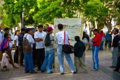
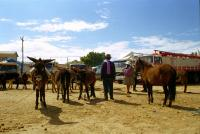
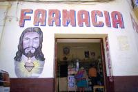
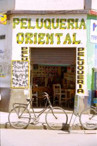
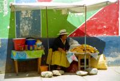
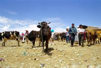
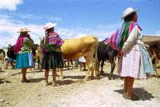
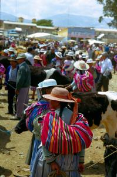

|
Dimanche 14 octobre
Trajet de La Paz à Cochabamba agrémenté d'un arrêt "almuerzo" (déjeuner) le
plus mauvais qu'on ait eu, d'une volée de grêlons et de superbes paysages. Arrivéee
animée à Cochabamba. Entre le terminal des bus et l'hôtel, 10 minutes de marche
et... un grand bol de vomi chocolaté sur le pantalon tout propre et les sacs.
Heureusement qu'on a des caches-sacs protecteurs. Ca colle, ça mouille, ça dégoûte.
Heureusement une bonne âme, un grand-père nous explique que c'est un enfant
qui a vomi d'un balcon, une autre veut nous aider à nettoyer. Il faut dire que
ça fait crade, un peu comme une diarrhée non maîtrisée. On refuse, on va aller
à l'hôtel. Il fait dire que c'est surprenant, comme par hasard ce gentil nettoyeur
parle très bien anglais, chose fort rare ici. Le grand-père s'essuie l'épaule
où... il n'y a rien. Et surtout, vu l'endroit où a atterri le chocolat (juste
sous les fesses), impossible que cela vienne d'en haut, mon gros sacs m'aurait
protégée... En plus, il n'y a quasi rien sur le trottoir. Bref, on ne pose surtout
pas les sacs, on verra à l'hôtel. Là, ça continue, Lionel est monté voir la
chambre, j'attend dans la cour, un type entre derrière moi et insiste lourdement
pour que je pose mon sac, il veut m'aider! Je dis non. Il semble fort contrarié.
En fait c'est un sketche, encore, avec 3 ou 4 complices. Le but est de faire
déposer les sacs pour les piquer. Deux bonnes nouvelles et une moyenne. Ce n'est
pas du vomi masi du lait chocolaté et un truc genre céréales. La deuxième, on
ne s'est rien fait piquer, bons réflexes même si c'est vrai que ça détourne
bien l'attention. Malheureusement, des tâches de gras restent sur mon pantalon.
On a rencontré 2 belges qui ont eu le même tour 2 heures plus tôt.
Lundi 15 octobre
Ce matin on va retrouver le Jéjé après une grasse mat. Il est chez ses amis
qui lui laissent l'appartement ici à Cochabamba pendant quelques jours. On va
lui tenir compagnie. Quel bonheur de trouver un bon lit. Celui de la nuit dernière
nous a cassés partout avec ses ressorts saillants. Et une bonne douche, une
cuisine, etc. Et surtout, une magnifique vue sur Cochabamba, on est au 11ème
étage. Pour fêter ça, on va se manger une énorme pizza. Puis direction le centre,
à pied pour découvrir. La ville est belle et très chouette. La place du 14 septembre
est celle des revendications, des messages à faire passer. On y trouve un missionnaire
qui fait la grève de la faim parce que les mormons l'ont viré de son village
(ici, c'est le centre général des mormons pour toute l'amérique du sud), des
extraits de journaux contre la guerre, pour l'alphabétisation, etc. On atterri
quelques heures plus tard à La Cancha, le plus grand marché permanent de Bolivie.
on trouve des bouquins, des pommes, 15 bananes (pourvu que ça suffise) mais
pas de sandales pour Lionel qui va donc continuer encore un peu à moisir des
pieds.
Puis on achète dans un autre marché (il y en a partout) du fromage de vache
et... des "Pretzels" délicieux. Ce sera notre apéro dîner, on le complète avec
une soupe à la tomate pour faire comme si c'était équilibré. Méga apéro sur
la terrasse en admirant les lunières de la ville. Puis on va boire un verre
dans la rue branchée avec Marcelo et Daniela les amis de Jéjé super sympas.
Excellente soirée.
Mardi 16 octobre
7H00 du mat on est déjà debout. C'est qu'aujourd'hui c'est le jour du marché
à Punata. Taxi, un peu de marche parce qu'on s'est trompé d'endroit, bus et
nous voici à Punata. Le marché est énorme, le village sympathique. En fait,
chaque rue et place de la ville semble être dédiée au marché. Et c'est grand!
Légumes, fruits, sacs de pâtes au kilo qui font rêver Lionel, vêtements, clous,
chaussures en pneu etc. Il y a de tout. et en plus par rapport aux marchés que
nous avons déjà vus, c'est la foire aux bestiaux. Cochons de tous âges, toutes
couleurs et tous poids, moutons, chèvres, poules, ânes et bovins. Les plus nombreux
sont de loin les bovins. Certains sont très calmes, mais d'autres beaucoup moins
comme ce taureau qui a traîné 2 types sur 20 mètres, d'abord en ski nautique
puis le nez dans la terre battue!!! Merci les gars, fort distrayant pour nous.
Ils ont eu un mal fou à le maîtriser. 5 minutes après un autre arrive en traînant
2 autres types comme des fêtus de paille. Mais il est beaucoup moins amusant.
Et pour cause, il vient droit sur nous! On s'enfuit en courant, ce qui fait
bien rire les boliviennes deriière leurs étals au sol.
Un chorizo comme déjeuner pour nous remettre, sans les crudités pour l'estomac
fragile de Jéjé qui doit trouver que quand même, on le fait manger dans des
endroits dont la propreté semble plus que douteuse. Puis direction Tarata, un
joli petit village bien calme où les gens sont fort gentils. Une dame nous demande
des nouvelles de la guerre et rigole beaucoup quadn on ne comprend pas ce qu'elle
dit. Une autre nous offre un verre de chicha, l'alcool local fait à base de
maïs, blé et eau. Jéjé n'aime pas, Lionel moyen, moi j'aime ça. Ca ressemble
un peu à du cidre bu au tonneau mais peu pétillant. On flâne dans les ruelles
sans voitures, on visite l'église, le couvent est fermé.
De retour à Cocha, on ne s'en arrête pas là. On va voir "El Christo". C'est
un énorme statue blanche du christ érigée sur une coline dans la ville. Courageux,
nous montons en téléphérique... Plus grand, plus élevé en altidue que celui
de Rio, il est impressionnant. Pleins de bonne volonté, on redescend à pied
des centaines de marches. Ca rend le nez de Jéjé apparemment furieux, il en
devient rouge pétant. Quant à ses gambettes, elles en tremblent encore! Heureusement
la pensée du glacier Dumbo lui donne des ailes et c'est presqu'en courant qu'il
nous y emmène...
Ce soir, on va dîner avec Marcelo et Daniela, encore une excellente soirée
où on a bien rigolé tout en parlant mi-espagnol mi-français, Marcelo parlant
le français, sa femme le comprenant sans le parler et nous heureux d'exercer
notre espagnol.
Mercredi 17 octobre
Jéjé s'est envolé à l'aube pour La Paz pendant qu'on faisait une grase mat.
On n'a plus l'habitude de se coucher après 21H00 et là, ça fait 4 ou 5 jours
qu'on veille tard, mais tard... parfois jusqu'à 1H00 du mat! Cochabamba possède
un aspect fort sympathique. C'est la ville aux 5 repas et des petits creux.
La cuisine y est excellente et les pâtisseries également. Et puis, les cochabambinos
s'expriment librement. Sur la place de 14 septembre bien sûr, mais aussi sur
les murs où on peut lire "avant, le Vietnam, aujourd'hui l'Afghanistan, et demain???"
et nombreuses autres réactions anti-américaines. Déjà à La Paz une tenancière
de resto avait demandé sa nationalité à un québécois "ici, on ne sert pas les
américains". Il a donc présenté son compagnon de voyage américain comme étant
canadien... Lequel ne comprenant pas l'espagnol ignore toujours l'état d'esprit
de cette femme.
Jeudi 18 septembre
Fatigués, on a finalement reporté notre départ à demain. C'est ca le luxe,
avoir le temps de prendre le temps. En plus, suite à un orage avec des gouttes
grosses comme des noix qui nous avait surpris mardi soir, j'ai un peu de fièvre
et de courbatures. Première fois depuis notre départ. Et ce matin j'ai dormi
jusqu'à 11H00, ca fait du bien.
Tout à l'heure, en allant au terminal de bus, dans la rue du lait chocolaté,
un type louche nous suivait. Mais en fins limiers que nous sommes devenus, nous
l'avions repéré. Une femme nous dépasse en courant et perd son portefeuille
devant nous. Il le ramasse. La femme reste sourde à nos cris. Il l'ouvre, c'est
un petit portefeuille très épais, exactement le même que celui que m'avait tendu
le type qui voulait "m'aider" à poser mes sacs dans la cour de l'hôtel lors
de notre arrivée. Pour m'occuper les mains pendant qu'il aurait "déposé" mes
sacs. Bref, il l'ouvre et on y voit dans n plastique une liasse de billets de
un dollars américains. Surprenant, rien d'autre, ni papiers ni bolivianos. Le
type ne cherche pas à appeler la femme. On hésite, et si elle avait vraiment
perdu cet argent? On court de l'autre côté de la rue, on l'appelle, elle sait
tout de suite de quoi on parle sans avoir besoin de vérifier dans sa poche si
son portefeuille n'est pas là ni sans qu'on utilise le mot espagnol qu'on ignore
(on ne peut pas tout connaître). Le type arrive mais ne le lui rend pas, ils
semblent se connaître. Trois ou quatre types arrivent en traversant la rue alors
que tout à l'heure personne n'a réagi. Ca sent mauvais pour nous, on part sans
se retourner en encadrant bien le sac à dos avec l'appareil photo, malgré les
cris de la dame "mister...". Tiens de l'anglais...
Suite du voyage : Vers l'Amazonie...
|

Bolivie
Cochabamba
|

Bolivie
Punata
|

Bolivie
Punata
|

Bolivie
Punata
|

Bolivie
Punata
|

Bolivie
Punata
|

Bolivie
Punata
|

Bolivie
Punata
|
|
|